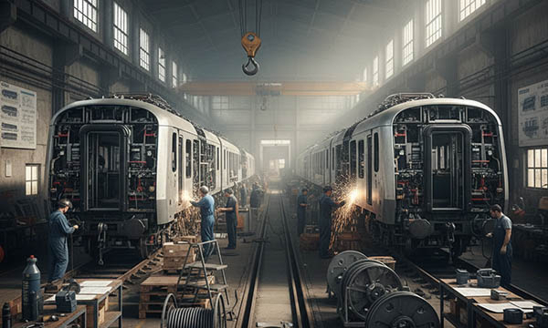

The rail industry is a cornerstone of sustainable transport in Germany, France, Italy, Switzerland, the United Kingdom, Norway, Austria, Poland, and the Benelux countries. It plays a vital role in reducing road traffic, lowering CO2 emissions, and providing reliable public and freight transport solutions.
To maintain high operational standards, trains require regular maintenance of engines, braking systems, signaling technology, and power supplies. Quick identification of technical issues is essential to prevent delays, ensure passenger safety, and maintain an efficient transport network.
SignXpert offers a wide range of customized signs, labeling, and decals specifically designed for rail systems. Their solutions include cable and component marking, durable stainless steel labels, and clear safety signage, all built to withstand vibrations, temperature fluctuations, and moisture.
Fast delivery and the ability to tailor labels to specific operational requirements ensure that rail operators can maintain high safety standards while optimizing maintenance workflows.
The Rail Industry: A Pillar of Sustainable Transport and Economic Growth.
The rail industry is central to connecting cities, regions, and countries, providing an energy-efficient alternative to road and air transport.
By moving large numbers of passengers and freight efficiently, trains help reduce congestion, pollution, and carbon emissions. European rail networks are increasingly focused on modernization and sustainability, integrating advanced signaling systems, high-speed trains, and smart infrastructure.
Maintaining smooth operations requires rigorous planning, continuous innovation, and detailed monitoring of railway systems.
From tracks and signaling to train engines and electronics, every component must function reliably. Safety and precision are paramount, and clear labeling and signage play a critical role in ensuring that all technical systems are understood, maintained, and operated correctly.
Train Maintenance: Prioritizing Safety and Reliability.
Train maintenance is a complex, high-stakes process that safeguards both passengers and staff. Trains operate under heavy loads and often run 24/7, meaning that regular inspections and servicing are essential.
Maintenance includes engine checks, brake servicing, electronics updates, and component repairs.
Technicians rely on clear, durable labeling to quickly identify parts and systems, reducing downtime and preventing errors.
Signs and labels also provide essential safety guidance, highlight emergency exits, and mark critical safety zones.
Stainless steel labeling solutions are particularly effective for railway environments, able to withstand vibrations, moisture, and temperature extremes.
By combining precise maintenance procedures with clear labeling, rail operators can ensure trains remain safe, reliable, and punctual.
The Importance of Signs and Labeling in the Rail Industry.
Labeling and signage are crucial for maintaining and operating complex train systems efficiently.
Cables, valves, and machinery must be clearly marked to simplify troubleshooting and reduce maintenance time.
Labels also serve as an important safety tool, informing personnel of hazards, emergency procedures, and operational guidelines.
Durable signage ensures that even under harsh conditions — such as vibrations, high humidity, or fluctuating temperatures — information remains legible and accessible.
Efficient labeling minimizes human error, improves workflow, and supports the seamless operation of rail services, helping operators maintain high standards of safety and reliability.
Why SignXpert Is the Best Choice for Rail Industry Labeling.
SignXpert provides customized, high-quality signs and labeling solutions tailored to the rigorous demands of the rail industry.
Their products are robust enough to withstand vibrations, moisture, and extreme temperatures, ensuring long-term durability.
The user-friendly online system allows rail operators to design and order labeling quickly, while fast delivery ensures that maintenance and production schedules are not disrupted.
Competitive pricing makes it possible to implement durable and reliable labeling solutions without exceeding budget constraints.
Whether it’s safety signs, stainless steel cable labeling, or component markers, SignXpert ensures that rail operators can maintain a safe, organized, and efficient working environment.
By choosing SignXpert, the rail industry gains a trusted partner for signage and labeling that enhances safety, workflow, and operational efficiency across Europe.